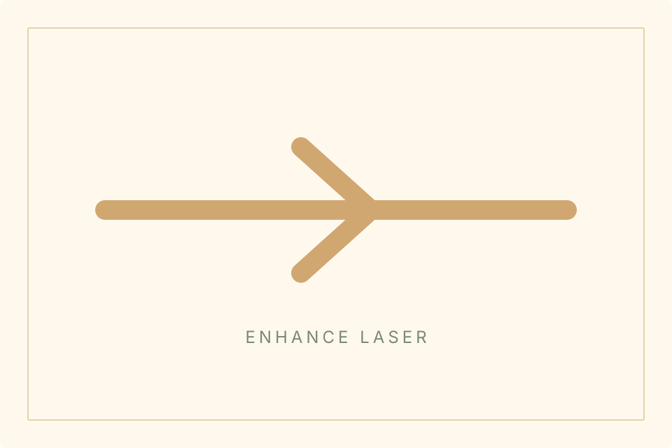
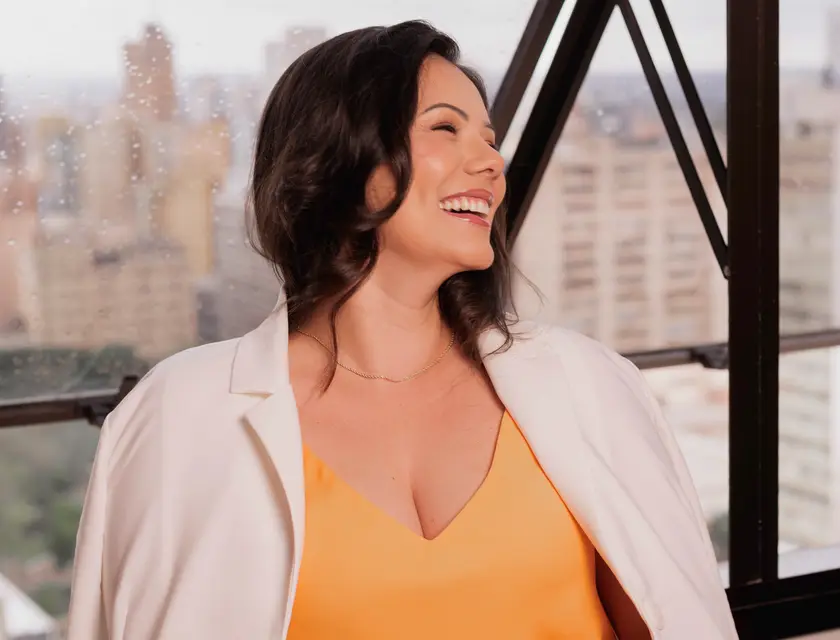
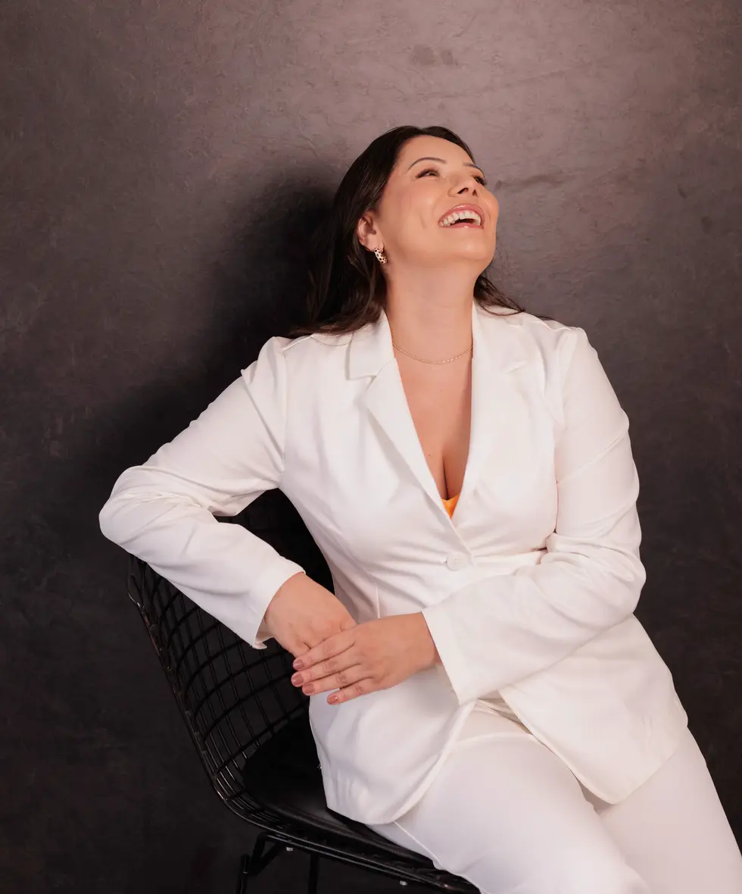

Enhance / Laser Hero
Laser guidance
A suitability-led approach to laser care, expectations, and professional evaluation.
Enhance / Process
Care process
Evaluation, preparation, guidance, and review keep the process understandable.
- Assess
- Prepare
- Guide
- Review

Enhance / Safety
Safe expectations
Comfort, timing, and suitability should be clarified before moving forward.
Enhance / Editorial Break
Precision needs care
A careful process helps keep decisions clear and personal.
Enhance / Related Routes
Related guidance
Explore skin context or responsible results next.
Enhance / FAQ Bridge
Common questions
Find short answers before your consultation.

Enhance / Consultation CTA
Check suitability
Request an evaluation to discuss your goals and next steps.

Enhance / Suitability First
Suitability first
Laser decisions depend on skin context, goals, comfort, and professional assessment.
Enhance / Guidance
Clear guidance
The right next step should be discussed carefully, without pressure or unrealistic promises.
Enhance / Trust Route
Need clarity
Use the contact route or read privacy guidance before sending details.